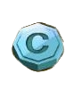
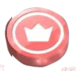
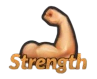
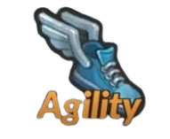
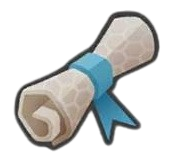

1. Game Currencies

Understanding the game’s currencies is crucial for managing your resources effectively:
- Cash: Used for most everyday expenses, including upgrading gyms, recruiting fighters, and purchasing equipment. There will be a time in the end game that you will not be able to spend your cash anymore, you will own everything and cash keeps stacking up in your storage.
- Credits: A premium currency, often obtained through special achievements or real-money purchases. Spend credits wisely on rare items or significant upgrades.
- Focus Points: These allow your fighters to participate in mental training sessions, enhancing their stats. Do NOT Waste your Focus Points, they are very important!
-  Prestige: A long-term currency gained as you progress through the game. It is used to see how far you have upgraded your gym, and the maximum is 12,000,000.
2. Fighter Stats
Each fighter has core attributes that define their performance:
- Strength: Increase damage output on successfully landed strikes.
- Agility: Increase the initiative of the fighter. Higher initiative will allow the fighter to perform more attacks per fight.
- Condition: Increase your max health, health regeneration and defense against takedowns, clinchwork and submissions.
Balancing these stats is vital to building versatile and competitive fighters. They are very important to upgrade as soon as your fighter levels up!
3. Disciplines and Talents

Understanding disciplines and talents is key to fighter development:
- Disciplines: These are the fighting styles your athletes specialize in, such as Boxing, Muay Thai, or Wrestling. Each discipline brings unique strengths and weaknesses.
- Talents: Talents are passive bonuses or special abilities fighters can acquire. Strategically choose talents to complement your fighter’s stats and discipline.
4. Gym Management
Your gym is the backbone of your success:
- Upgrade gym facilities to increase the quality of training sessions, and gain more prestige the higher level each equipment is.
- Equip your gym with specialized equipment that boosts specific stats for fighters.
- Manage resources to train multiple fighters without overextending your focus points.
5. Progression Strategy
Develop a strategy for progressing through the game:
- Early Game: Focus on recruiting a balanced team of fighters and improving their core stats. Start with a few fighters to keep resource management simple.
- Mid-Game: Upgrade your gym and equipment to prepare for tougher opponents. Experiment with different disciplines and talents to find winning combinations. Keep focused on 2 fighters at a time, since you need to upgrade mental training to max to have a good fighter in late game.
- Late Game: Compete in higher leagues, unlock advanced abilities, and focus on prestige rewards to solidify your dominance. Learn each style and which disciplines and talents work for each fighter, there is a lot of different tweaks to make your fighter win.
6. Combat Preparation
Before every fight:
- Review your opponent’s stats and fighting style.
- Adjust your fighter’s tactics, focusing on strengths that exploit the opponent’s weaknesses.
- Train fighters adequately to ensure peak performance during matches.
- Choose if you go Aggressive, defensive or normal.
7. Tips for Success
- Only focus on 1-2 fighters at a time, to max focus points and get good discipline cards.
- Keep an eye on the in-game economy; don’t overspend credits or cash.
- Regularly rotate your fighters to avoid burnout and keep them progressing.
- Join online communities or forums to learn from other players and share strategies.